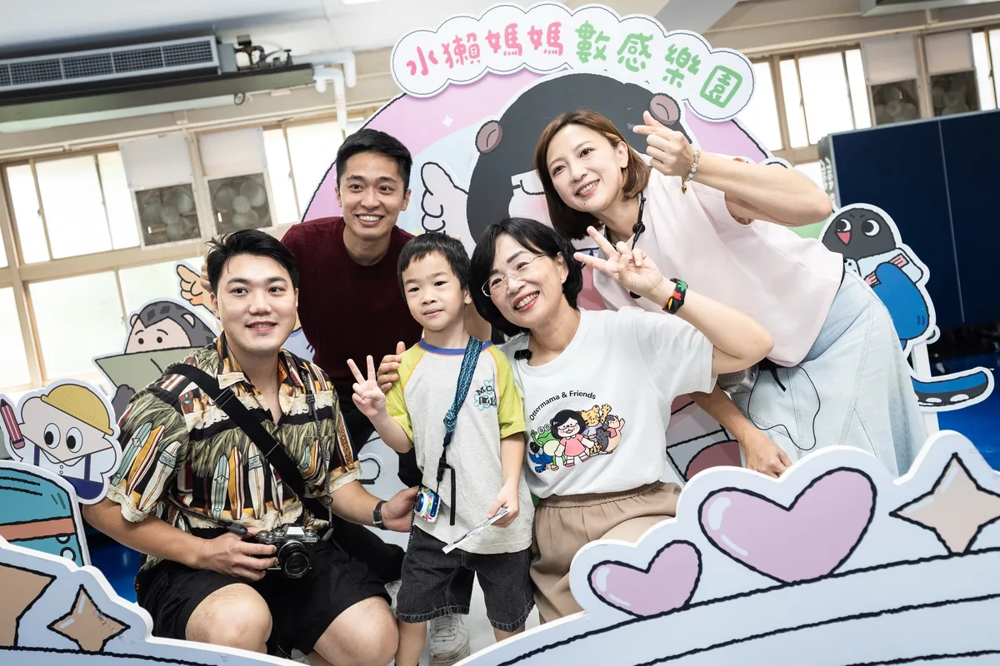
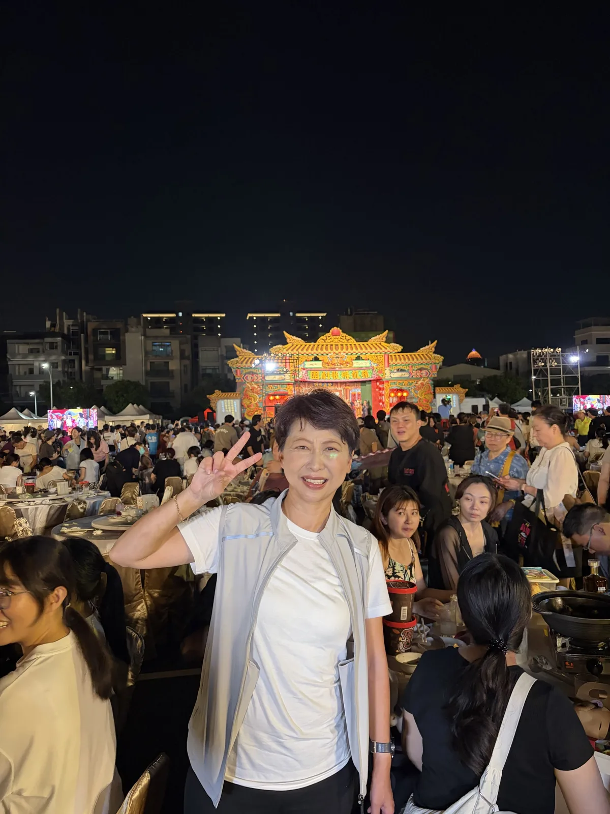

MAYOR2026.OBSERVE.TW
整理臺北、新北、桃園、臺中、臺南、高雄市長候選人的官方公開發文，跨平台合併時間軸與議題比例。
Six Municipalities
最後更新 2026-09-20 23:37
Latest

@pumashen:謝謝學長帶我飛！ ⠀ 刈包有夠好吃 然後我人生第一次吃糖葫蘆 ⠀ 今天我們勇敢走進夜市 大家在夜市前就自動摩西分海 實在有夠厲害 ⠀ 謝謝大家的熱情 我愛中壢的大家！


@zenolai:這個週末，我們連續成立了工業區、姊妹會、客家、左營楠梓四個後援總會，看到大家站出來相挺，心裡滿是感動和責任。 高雄的發展引擎正在全速運轉。在工業區後援會上，我向企業界承諾，未來的高雄不能只當AI的房東，我們必須成為AI的股東。傳統產業和科技產業要互相加值，帶動高雄經濟大步向前。 城市的進步，更需要溫暖的力量支撐。在姊妹會上， @bikhimhsiao 蕭副總統特別到場支持，滿場的熱情讓我非常感動。我承諾推動「雄愛媽媽」三大政策，從加碼育兒補助、擴大產後照顧，到協助重返職場，高雄一定會做每一位女性最堅強的後盾。

@schuanglawyer:世杰跟沈伯洋 @pumashen 、張惇涵 @changtunhan 、桃園隊議員們，在中壢夜市杰伴同行！心桃園 動起來💖
@schuanglawyer:我快到了！！！


#水獺媽媽數感樂園 大成功！玩出數學的無限可能✨ 這次水獺媽媽樂園特別和 @numeracylabtw 合作，把數學變成好玩的互動機台和趣味關卡！我也和小水獺們挑戰超神奇的剪紙魔術，讓一張原本只能站三個人的紙，經過巧妙裁剪，竟然變成超大紙圈，一口氣裝進30個小朋友，大家玩得又驚又喜❤️ 這次最有成就感的環節，就是我們用大型的「新店地圖」，讓大家一起找找自己的家在哪裡，再放上親手用紙盒做成的小房子，用不同角度重新認識熟悉的生活圈。看著地圖上的小房子越蓋越多，整個新店都變成大家一起探索的大樂園！ 很開心水獺媽媽樂園可以和不同領域結合，把知識變成孩子玩得開心、學得投入的精彩體驗。我會把更多好玩又有趣的活動帶到新北各地，陪伴親子一起從玩中學、學中玩，帶給孩子們難忘的成長回憶！
@pumashen:週一早上，就是要去公園運動啊！ 大家明早見！ ⠀ 9/21 (一) 06:15 📍社子公園

新台中，欣市長！ 汗水裡，有我流下來的眼淚..... 拜託大家、拜託大家、拜託大家，用懇請拜託的心，這一次我們衝過關，屯區一定要出一個市長！

市民一起來當市長！「反應問題」龍介就來處理

@prof.kochihen:919鳳山大造勢之後，我帶著蔣萬安市長到 六合夜市，感受到高雄鄉親滿滿的熱情。

@schuanglawyer:【杰伴踅夜市 ft. 沈伯洋 .ᐟ 集合點更新】 剛剛跑行程，有市民朋友跟我說晚上還要再見，大家都非常期待🤩 ‼️請大家互相提醒，晚上集合點更新‼️ 今晚我們在「新明國小附幼前」（新明路、明德路轉角）相見，小心不要跑錯囉～

用滿檔的行程，迎接朝氣蓬勃的臺中！ 再用在地美味當結尾，感受最熱情的 #臺中味 😋 清晨天剛微亮，我已在永慶盃路跑感受大家滿滿的活力，接著與氣功協會的長輩們相聚，看見了健康與笑容。一路轉往清水體育嘉年華與西屯，每一雙緊握的手、每一句殷切的期盼，我都深深記在心底。 午後，我參與了南陽國小管樂隊與日本大阪青少年團的音樂交流，臺日青少年的純粹樂音令人動容；傍晚先與太平的鄉親們，在問政說明會聊聊天；接著陪大里鄉親，在廟埕前看著明華園大戲，重溫了最純樸的溫暖記憶。 夜幕低垂，跟著 #張彥彤議員 的腳步來到熱鬧的 #中華路夜市，在最熟悉、熱鬧的臺中味裡，向大家打招呼、問好！ 從早到晚，雖然汗水濕透了襯衫，但聽到一句句「#啟臣加油」，心頭卻是無比溫暖。謝謝你們做我最堅強的後盾，讓我們一起讓臺中更好！ #臺中啟程 #打造旗艦城 #人情味 #TaichungWay


@chen_tingfei:今天晚上我跟兩百多桌的市民朋友們一起吃最道地的辦桌！ 謝謝鍘美藝術節團隊的所有工作人員，在短時間內就能籌備出規模如此盛大的辦桌看戲活動，真的不簡單！👍 今晚每一桌都坐得滿滿，大家一起吃飯聊天，現場真的很熱鬧，也讓我感受到我們臺南人的滿滿人情味❤️

同為教育人，感謝教師職業工會的力挺與推薦！ #教師節 前夕，走進 #高雄市教師職業工會 模範教師表揚活動現場，看見許多熟悉的面孔與滿場熱情的教育夥伴，內心除了感動，更多的是深刻的共鳴與踏實。 非常榮幸能獲得教師職業工會的「唯一推薦」。這份情義相挺，銘記在心、加倍珍惜。未來若順利當選市長，市府與教師絕對是夥伴關係，也樂於接受工會的鞭策與監督，因為我們共同的目標，就是希望高雄的教育更好！ 長期為教育奔走的全教總前理事長侯俊良，細數我們過去在立法院為了教育法案一次次的專業討論與堅持，肯定我始終站在教育第一線，更期盼由最懂教育的立委，來掌舵高雄教育的未來。工會秘書長于居正也表達，感謝我們通過五一勞動節與教師節放假修法，並在第一時間簽署並允諾工會的教育訴求，未來將落實合理化加班補償、恢復編列教師文康活動費，並持續降低班級人數、減輕教學和行政負擔。 這幾年教育環境瀰漫前所未有的緊張與不安，相較過去社會對師道的尊崇，如今許多悖離基層的不當政策，反而成為壓垮教師身心的沉重枷鎖。正因如此，我是第一位向教育部爭取教師「離線權」的立委！遺憾的是，中央至今僅以一紙公文函示建議各級學校落實。我認為保障老師下班不受干擾的喘息空間，必須有更具法律效力的規範，絕不能讓基層老師，獨自面對無窮盡的通訊轟炸與身心耗損。 同為「 #教育人 」，關心教育對我而言就像呼吸一樣自然。我深知，面對繁瑣沉重的行政業務、日趨複雜的親師溝通，以及機制不彰、嚴重折磨第一線身心的「 #校事會議 」，教育部不能再因循苟且、舉棋不定！ 教室講台面積雖小，托起的卻是整座城市的未來。教育好一個孩子，往往能改變一個家庭、進而改變社會。老師需要的不是廉價的掌聲，而是尊嚴與制度的後盾。 不管當前環境多麼嚴峻，我一定傾盡全力，給予每位默默付出的教師最堅實的支持。未來若入主市府，絕對結合教師、校長與家長的力量，將 #高雄 的教育打造成「六都第一」！教育人挺教育人，給我四年，讓我為高雄的教育拚下一個十年！
@chen_tingfei:警察妃妃泰迪熊正式出勤！🐻👮♀️ 來競總的話可能會看到它在巡邏喔🚨

讓禱告成為希望，用行動改變高雄！ 參加第五屆 #高雄城市祈禱午餐會 ，心裡有很深的感動，來自不同教會、不同領域、不同背景的朋友齊聚一堂，為同一座城市獻上祝福與禱告。 感謝高雄市基督教福音聯盟協會，以及楊錫儒牧師和所有牧長、弟兄姊妹多年來深耕社區；在大家需要協助的時候，都能看見教會付出的身影。 大家站在一起為 #高雄 禱告，談的不只是城市建設，更關心人口發展、青年未來、居住正義、就業創業、世代共融，以及每一個家庭的幸福。 聖經中說：「你們要為那城求平安。」我特別喜歡！因為我們所追求的平安，不只是沒有風雨，而是長輩有人照顧、孩子能安心成長、家庭能看見希望、年輕人願意把夢想留在高雄。 #禱告 不是把責任交出去，而是在禱告之後，更要走出去，看見需要，就伸出援手；看見問題，就一起尋找答案；看見城市的未來，就共同承擔責任。 願我們繼續攜手同行，讓更多善意在高雄匯聚，讓更多希望在高雄扎根；願上帝祝福高雄，祝福每一個家庭，也祝福所有願意為這座城市付出的人。
週一早上，就是要去公園運動啊！ 大家明早見！ ⠀ 9/21 (一) 06:15 📍社子公園

@a_chun1973:新台中，欣市長！ 汗水裡，有我流下來的眼淚..... 拜託大家、拜託大家、拜託大家，用懇請拜託的心，這一次我們衝過關，屯區一定要出一個市長！

@hsiehlungchieh:市民一起來當市長！「反應問題」龍介就來處理


After the 9/19 Fengshan rally, I brought Mayor #ChiangWanAn to #LiuheNightMarket and felt the ove...

【杰伴踅夜市 ft. 沈伯洋 .ᐟ 集合點更新】 剛剛跑行程，有市民朋友跟我說晚上還要再見，大家都非常期待🤩 ‼️請大家互相提醒，晚上集合點更新‼️ 今晚我們在「新明國小附幼前」（新明路、明德路轉角）相見，小心不要跑錯囉～

"The shortest shortcut is the long way 'round"—that has always been my motto

@schuanglawyer:開逛中壢夜市！每一攤都想吃！

讓「臺中升級、幸福加給」💪 「#20分鐘生活圈」把最寶貴的時間還給市民！ 感謝太平鄉親搖扇吶喊的熱情，這是啟臣為大家拚搏最大的動力！未來，我將導入AI科技治理，規劃臺中「五大生活圈」，落實「20分鐘生活圈」願景，讓大家在20分鐘內滿足生活所需，「把省下來的通勤時間，還給自己、留給家人」！ 首要任務是重整大眾運輸，做到「跨域快、圈內密、轉乘方便」，串聯六大轉運樞紐，大幅提升交通效率。 啟臣更要推動產業智慧升級，對接半導體、機器人製造、無人載具等新興供應鏈；導入科技智慧農業，再造臺中「領鮮」品牌，創造青年留鄉、返鄉的發展機會；同時擴大托育、托老政策，減輕年輕家庭負擔，讓不同世代都能在臺中幸福安居。 感謝 #賴義鍠議員、 #黃佳恬議員 與里長們的全力相挺！懇請鄉親集中選票支持啟臣，讓我能在市府與議員、里長們並肩作戰，讓臺中啟程、打造旗艦城。 #臺中啟程 #打造旗艦城
@su.chiaohui:#水獺媽媽數感樂園 大成功！玩出數學的無限可能✨ 這次水獺媽媽樂園特別和 @numeracylabtw 數感實驗室合作，把數學變成好玩的互動機台和趣味關卡！我也和小水獺們挑戰超神奇的剪紙魔術，讓一張原本只能站三個人的紙，經過巧妙裁剪，竟然變成超大紙圈，一口氣裝進30個小朋友，大家玩得又驚又喜❤️ 這次最有成就感的環節，就是我們用大型的「新店地圖」，讓大家一起找找自己的家在哪裡，再放上親手用紙盒做成的小房子，用不同角度重新認識熟悉的生活圈。看著地圖上的小房子越蓋越多，整個新店都變成大家一起探索的大樂園！

臺中要超越臺中！好的政策延續，更要加碼升級 今天來到西屯大鵬新村，和楊正中前議員、楊大鋐議員一起向鄉親請託。 臺中這幾年在盧秀燕市長帶領下，已經打下很好的基礎。我要做的，就是好的政策延續、建設加速推進，還要 #持續加碼升級！ 市政是一棒接一棒，臺中現在很好，但我們不能停在原地，下一步就是要讓 #臺中超越臺中 。 地方建設也需要市府、議會一起拚。楊大鋐長期深耕西屯、了解地方需求，未來我們要攜手合作，把鄉親關心的大小事一件一件做好。#府會雙贏，市民才會贏、臺中才能贏！ 距離11月28日投票剩下不到70天，每一票都很重要。臺中的未來，由我們自己決定！拜託大家一起催票、拉票，讓臺中持續建設、繼續向前！ #臺中啟程 #打造旗艦城

新台中，欣市長！汗水裡，有我流下來的眼淚.....拜託大家、拜託大家、拜託大家，用懇請拜託的心，這一次我們衝過關，屯區一定要出一個市長！
Real change for Zhongzheng and Wanhua isn't just a slogan; it's reaching every alley and every home!

Be the Mayor Together with Me! Report Your Issues and Long Jie Will Handle Them

919鳳山大造勢之後，我帶著蔣萬安 市長到 #六合夜市，感受到高雄鄉親滿滿的熱情。

@schuanglawyer:昨天滿滿的中秋活動，今天繼續！